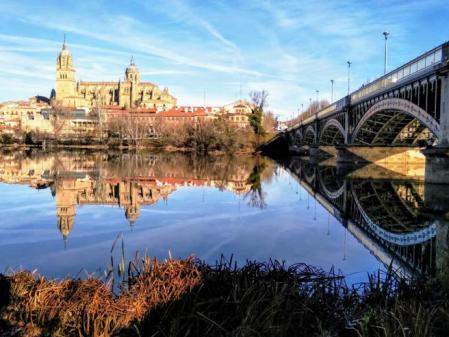

Salamanca
Cultura
La ciudad de Salamanca celebra el 12 de junio las fiestas de su patrón San Juan de Sahagún y el 8 de septiembre las de su patrona la Virgen de la Vega. También festeja otras muy famosas como el lunes de aguas y la Semana Santa, declarada de interés turístico internacional.
En el resto de la provincia es de interés turístico internacional la procesión del Corpus Christi de Béjar con los Hombres de Musgo. De interés turístico nacional el Carnaval del Toro de Ciudad Rodrigo y la Loa de La Alberca. De interés turístico regional se celebran la fiesta de El Noveno de San Felices de los Gallegos a mediados de mayo, la boda típica de Candelario en el segundo domingo de agosto, el Corpus Christi de La Alberca, la matanza típica de Guijuelo durante enero y febrero, La Charrada de Ciudad Rodrigo cada sábado santo y las fiestas patronales de Santa Teresa de Alba de Tormes a mediados de octubre.

El influjo cultural de la prestigiosa Universidad de Salamanca fue probablemente la causa de la rápida castellanización de esta provincia, que dividió y aisló en dos el dominio del leonés. Esto eliminó la continuidad geográfica que seguramente existió con los dialectos del sur de la provincia, que hoy se catalogan como extremeño.
En 1492, Antonio de Nebrija redactó y publicó en Salamanca la primera gramática de la lengua castellana, convirtiendo a la ciudad en un referente de esta lengua. Hoy en día lo sigue siendo pero otros motivos y es que los estudiantes extranjeros la eligen prioritariamente entre otras ciudades para aprender el castellano. Debido a esto y otros hitos, se incluye en el Camino de la Lengua Castellana.
Volver al inicio
Geografía
Posee altitud media de 823 m s. n. m. y existen grandes diferencias entre unas zonas y otras. Con 2428 m s. n. m., el punto más alto de la provincia es el pico del Canchal de la Ceja, en la Sierra de Béjar, y con 116 m s. n. m., el punto más bajo es el valle del Salto de Saucelle, en las arribes.

Sus entidades geográficas diferenciadas son la dehesa (que ocupa toda la zona conocida como Campo Charro), la serranía (Sierras de Gata, Francia-Quilamas y Béjar), la llanura cerealista (principalmente en La Armuña, la Tierra de Peñaranda y parte de la Tierra de Alba), el regadío extenso (comarca de Las Villas) y las arribes del Duero, el Tormes, el Uces, el Huebra y el Águeda (en las comarcas de La Ribera y El Abadengo).
La red hidrográfica salmantina está conformada principalmente por la cuenca hidrográfica del Duero. Sus ríos más importantes son el Tormes, el Águeda, el Huebra, el Yeltes y el propio Duero. Los ríos del sudeste pertenecen a la cuenca hidrográfica del Tajo. Entre ellos destaca especialmente el río Alagón, en el que desembocan la mayoría de los ríos de las vertientes septentrionales de la Sierra de Francia-Quilamas y la Sierra de Béjar.
Varios cauces tienen regulado su caudal mediante pantanos, embalses y presas. La de Salamanca, con más de 3400 hm³, es la tercera provincia española con mayor capacidad de embalse de agua, sólo superada por las de Badajoz y Cáceres. Destacan la presa y el embalse de Almendra como la presa más alta y uno de los embalses más extensos de España. Ambas forman parte de los Saltos del Duero, un zamorano-salmantino complejo hidroeléctrico muy importante a nivel nacional. Las demás presas y embalses de la provincia son las de Águeda, Aldeadávila, Irueña, Navamuño, Riolobos, San Fernando, Santa Teresa, Saucelle y Villagonzalo de Tormes.
Volver al inicio
Historia
En el territorio de las actuales provincias españolas de Ávila y Salamanca, y en parte de las de Cáceres, Toledo y Zamora, estuvieron asentados los vetones, un pueblo prerromano de cultura celta del que existen numerosos restos arqueológicos por toda la provincia. Varias localidades tienen un origen vetón. Algunas de ellas importantes. Es el caso de Salamanca (Salmantica), Ledesma (Bletisama) y Ciudad Rodrigo (Augustobriga).
Sus poblados solían establecerse a orillas de los ríos y/o en cerros. Pueden citarse Salamanca y Ledesma siguiendo el curso del Tormes, Bermellar, El Castillo (Saldeana), Moncalvo (Hinojosa de Duero), Picón de la Mora (Picones) y Yecla la Vieja (Yecla) junto al Huebra, Ciudad Rodrigo, Irueña (Fuenteguinaldo) y Lerilla (Zamarra) en espigón a orillas del Águeda y Las Merchanas (Lumbrales), en un meandro del Camaces.
Tras la expansión progresiva del dominio romano por la península ibérica, el territorio de la actual provincia de Salamanca quedó integrado en el Imperio romano dentro de la provincia de Lusitania, dentro del conventus iuridicus Emeritense. Destacó en esta época la importancia de Salmántica, Bletisa y Miróbriga, la primera situada en la Vía de la Plata, el principal eje de comunicación romano que atravesaba el oeste hispano. Son testimonio de este periodo histórico el puente romano de Salamanca, las tres columnas de Ciudad Rodrigo, el Puente Mocho de Ledesma, o las numerosas estelas e inscripciones existentes por toda la provincia. También fueron importantes las explotaciones auríferas de las Cavenes de El Cabaco y El Maíllo.
Tras la caída de Roma, los alanos se asentaron en el antiguo solar vettón, siendo sustituidos en el control de la actual Salamanca por los visigodos, con quienes la ciudad de Salamanca ya era sede episcopal.
La invasión musulmana de la península ibérica a inicios del siglo VIII, echó a los visigodos del control de estas tierras, librando el último rey godo, Rodrigo, su última batalla en tierras de la actual provincia salmantina, en Segoyuela de los Cornejos. Así, Salamanca quedó en el área denominada "tierra de nadie", una extensa área geográfica situada entre el Sistema Central y la Cordillera Cantábrica que quedó semidespoblada en esta época.
Para saber más acerca de la historia de la provincia de SalamancaVolver al inicio
Localidades
Actualmente la provincia de Salamanca se encuentra dividida en 362 municipios o ayuntamientos que administran a una o varias localidades.
Es la segunda provincia española con mayor número de municipios, por detrás de la de Burgos. La mayoría de ellos tienen menos de 1000 habitantes.
Volver al inicio
Localización
La provincia de Salamanca se localiza en la parte noroeste de la península ibérica, en la región histórica de León y, desde 1983, integrada en la comunidad autónoma de Castilla y León. Ocupa una superficie geográfica de 12 349,06 km², lo que la convierte en la tercera provincia de Castilla y León por extensión después de las de León y Burgos y en la decimosexta de España. Limita con la provincia de Zamora al norte, con la provincia de Valladolid al noreste, con la provincia de Ávila al este, con Extremadura al sur y con Portugal al oeste.
.png)
Volver al inicio
Naturaleza
En toda la provincia existen cinco espacios naturales protegidos a nivel regional. Son el parque natural de Arribes del Duero, el parque natural de Las Batuecas - Sierra de Francia, el Espacio natural protegido de El Rebollar, la Sierra de Candelario y la Sierra de las Quilamas. En su totalidad, ocupan una superficie de 210 282 hectáreas. Las Sierras de Francia y Béjar y la Meseta Ibérica han sido declaradas reserva de la biosfera.
También existen diez zonas de especial protección para las aves (ZEPA) y trece lugares de importancia comunitaria (LIC). Son las Arribes del Duero, una parte del Campo de Argañán, una parte del Campo de Azaba, los Campos de Alba, Candelario, Las Batuecas - Sierra de Francia, el espacio natural protegido de El Rebollar, la Sierra de las Quilamas, las riberas de los ríos Huebra, Yeltes, Uces y afluentes, las riberas del río Agadón, las riberas del río Águeda, las riberas del río Alagón y afluentes, las riberas del río Tormes y afluentes, y el valle del Cuerpo de Hombre.
Volver al inicio
Tradiciones
La ciudad de Salamanca celebra el 12 de junio las fiestas de su patrón San Juan de Sahagún y el 8 de septiembre las de su patrona la Virgen de la Vega. También festeja otras muy famosas como el lunes de aguas y la Semana Santa, declarada de interés turístico internacional.

n el resto de la provincia es de interés turístico internacional la procesión del Corpus Christi de Béjar con los Hombres de Musgo. De interés turístico nacional el Carnaval del Toro de Ciudad Rodrigo y la Loa de La Alberca. De interés turístico regional se celebran la fiesta de El Noveno de San Felices de los Gallegos a mediados de mayo, la boda típica de Candelario en el segundo domingo de agosto, el Corpus Christi de La Alberca, la matanza típica de Guijuelo durante enero y febrero, La Charrada de Ciudad Rodrigo cada sábado santo y las fiestas patronales de Santa Teresa de Alba de Tormes a mediados de octubre.
Otras fiestas destacadas son los ofertorios de La Alberca, Mogarraz, Cepeda y San Martín del Castañar, el Petitorio de Navidad de Sequeros, los Espantos de Ledesma, La Misa del Gallo de Macotera, La Robra de El Cabaco, la cena de San Silvestre en Aldea del Obispo y La Chorizá de Puerto Seguro.
El 5 de febrero, se celebra la fiesta de Las Águedas en muchas localidades de la provincia. Es especialmente vistosa la de Miranda del Castañar. Otras fiestas comunes en muchas localidades son las animadas por encierros y corridas de toros. Se celebran en Alba de Tormes, Aldeadávila de la Ribera, Cepeda, Ciudad Rodrigo, Fuenteguinaldo, Gallegos de Argañán, Ledesma, Lumbrales, Los Santos, Ledesma, Lumbrales, Macotera, Martín de Yeltes, San Felices de los Gallegos, Sancti-Spíritus, Saucelle, Villarino de los Aires, Villavieja de Yeltes, Vilvestre y Vitigudino.
Volver al inicio
Otros
Gastronomía
Entre sus productos cabe destacar el jamón de Guijuelo, la denominación de origen más famosa de la provincia. También son reconocidos, aunque menos famosos, la Carne de Morucha, el Cerdo Ibérico de Salamanca, la Ternera Charra, el Queso Arribes de Salamanca, el farinato de Ciudad Rodrigo, la lenteja de La Armuña, el garbanzo de Pedrosillo, y la cereza de la Sierra de Francia. Como platos típicos gozan de fama el hornazo, que en Cepeda está cubierto de azúcar, el limón serrano y la sopa de ajo. Otros menos conocidos son el lechazo, el cochinillo, la chanfaina, las patas de cordero, el calderillo bejarano, el bollo maimón, los chochos de yema y las rosquillas de Ledesma.
Demografía
En el año 2020 la provincia contaba con 329 245 habitantes, de los cuales 144 825 vivían en la capital provincial.90 Se trata de un 44 % frente al 19 % del total de la provincia que suponía en 1950. En 2018 la provincia de Salamanca era la 8.ª de España en que existía un mayor porcentaje de habitantes concentrados en su capital (44,09 % frente a 31,96 % del conjunto de España).
La provincia de Salamanca es una de las más afectadas por el riesgo de despoblación, lo que se conoce como la España vaciada, pues desde ya hace varias décadas se produce un continuo proceso de emigración hacia las ciudades, sobre todo a Madrid, Barcelona, Bilbao y otras capitales como Valladolid o la propia Salamanca. Durante principios del siglo XXI, la capital provincial no registra un gran aumento de población, cosa que sí hacen las localidades de su área metropolitana, más conocida como Alfoz de Salamanca, que se diferencia de la mayoría de las otras áreas metropolitanas de España en que es muy compacta. Su extensión total no llega a los 200 km² y la distancia a la capital de los municipios que la componen oscila entre los 0 km de Santa Marta de Tormes (el municipio más poblado del área después de Salamanca capital) hasta los 11 km del municipio de Terradillos (Urbanización El Encinar).
Tras la ciudad de Salamanca, tan solo 9 municipios salmantinos superan los 5000 habitantes. Son Santa Marta de Tormes, Béjar, Ciudad Rodrigo, Villamayor de la Armuña, Carbajosa de la Sagrada, Peñaranda de Bracamonte, Villares de la Reina, Guijuelo y Alba de Tormes.

Volver al inicio